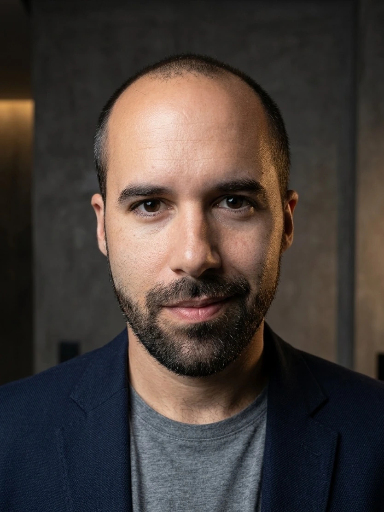
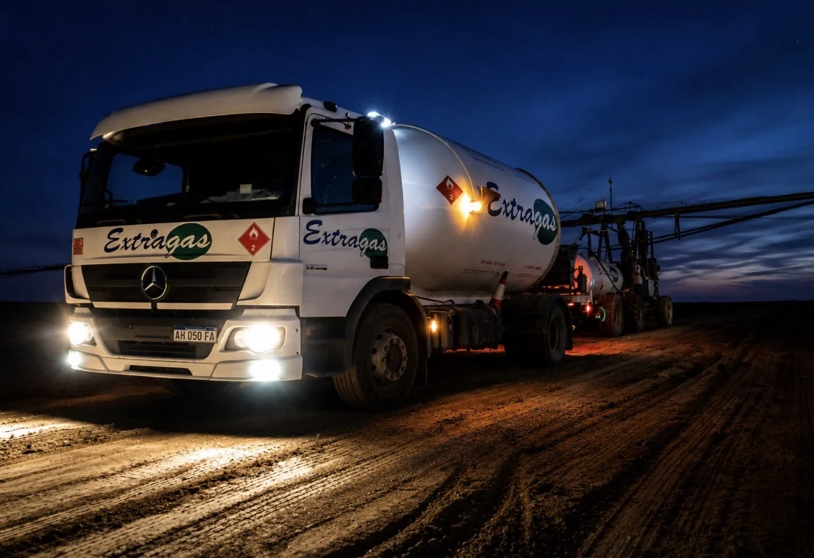

CASO DIGITAL 01 / 2023
IngresosJunio → julio
JUNIOUS$ 1.261,70↗JULIOUS$ 32.574,54
Cifras de ingresos visibles en la captura. No equivalen a utilidad neta, ROAS ni crecimiento atribuible exclusivamente a publicidad.

Soy Oscar Chinchilla. Mi experiencia combina gestión comercial, campañas de Google y Meta, optimización de presupuestos, landing pages y seguimiento de leads. No miro solo los clics: miro qué pasa hasta la venta.
Mi trabajo en Extragas incluyó la gestión y revisión del presupuesto publicitario. Al analizar términos de búsqueda, redes y conversiones, encontré gasto dirigido a tráfico que no estaba generando resultados medibles.
Ventana examinada: 16–22 de julio de 2026. La identificación del gasto improductivo está documentada; no se informa una mejora porcentual posterior sin datos antes/después.
Datos del análisis de campaña registrado en mi CV. El gráfico es una representación editorial, no una captura del Ads Manager. Conversiones ≠ ventas confirmadas.

La optimización no termina en el anuncio. Analizo la llegada del contacto, la landing, el canal de WhatsApp o CRM y la posibilidad real de convertir una consulta en una operación.
Mi recorrido dentro de empresas me dio una perspectiva que aplico al marketing: entender márgenes, proceso comercial, capacidad operativa y facturación. El dashboard muestra la evolución de una empresa durante mi etapa de trabajo, no resultados atribuibles de manera exclusiva a anuncios.
Los importes reproducen el dashboard aportado, expresados con símbolo $. La captura no identifica la moneda ni el nombre de la empresa. No son ingresos de DigitAI Motor ni métricas de ROAS.
Comparativas de ingresos de comercio electrónico. En la gestión digital, además de observar ventas, analizo inversión, margen, conversión y atribución para distinguir crecimiento de rentabilidad.
Esta es una metodología aplicable a clínicas estéticas; no la presento como un caso de clínica gestionada. Una campaña puede generar muchos formularios y aun así dejar la agenda vacía si el seguimiento falla.
Servicio, geografía, ticket, capacidad de agenda, propuesta de valor, historial de leads y tiempos de respuesta.
Hipótesis de mensajes, pruebas controladas, segmentación acorde con las políticas de Meta y decisiones según resultados.
Coherencia anuncio–landing, fricción de formularios, automatizaciones y trazabilidad del estado del contacto hasta su cita.
Comparar costos, tasas de contacto y asistencia; reasignar inversión en función de evidencia y calidad de citas, no vanidad.
Growth Partner: propuesta comercial, landing de captación, criterios de calificación y crecimiento basado en datos.
Presencia digital y generación de oportunidades comerciales B2B para industria y agro, con formularios de contacto.
Presentaciones y experiencias digitales para deportistas, con foco en posicionamiento, storytelling y contacto.
Enlaces a proyectos implementados. No representan por sí solos resultados comerciales de campañas.
Si buscás a alguien que combine estrategia de adquisición, control de presupuesto, seguimiento comercial y ejecución técnica, conversemos. Trabajo en remoto desde Argentina.